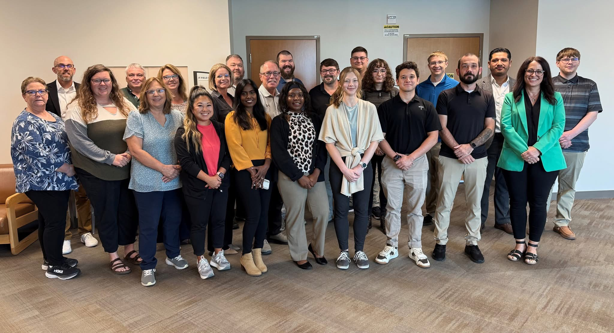

Faith Health | Growing Together Scholars Program
I completed my Career Scholars internship at Faith Health (formerly Faith Regional Health Services), and this journal captures my journey, growth, and everything I learned along the way. It wasn’t just about IT skills for me, it was about understanding how healthcare systems depend on technology every single day.

When I first started, I honestly didn’t know what healthcare IT really involved. I just knew computers were used in hospitals, but I didn’t understand how deep it goes behind the scenes. This experience helped me see how systems, security, and support all work together to keep everything running smoothly for patients and staff.